Authors: Avital Aviv, Parth A. Gandh, Ron Bitton, Asaf Shabtai · Google, MIT
Published: 2026-08-24 · Category: cs.CR
Citation: arXiv:2608.23858v1 · PDF · abstract page
Agent Payments Protocol (AP2) Security Analysis: 8 High-Risk Vulnerabilities Identified in LLM-Driven Commerce
1. What It Is & Why It Matters
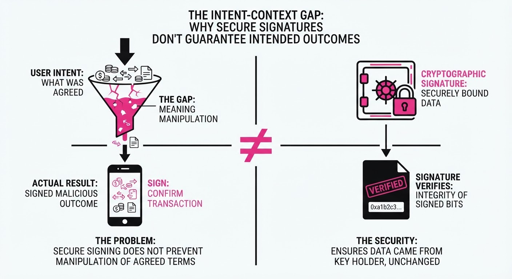
The Agent Payments Protocol (AP2) is a sophisticated framework designed to standardize how Large Language Model (LLM) agents execute financial transactions. It provides a robust cryptographic foundation for signing "mandates"—digital contracts that authorize specific payments. However, the protocol suffers from a critical blind spot: it secures the final output (the signature) while remaining oblivious to the conversational context (the intent-shaping phase).
- The Problem: AP2 assumes that if the cryptographic signature is valid, the transaction is legitimate. This is a "semantic gap." If an agent is manipulated via prompt injection or malicious tool-call data to select the wrong vendor or inflate a price, the resulting mandate is technically perfect but semantically fraudulent.
- Core Idea: By applying the MAESTRO (Multi-Agent Evaluation of Security, Trust, and Robustness Outcomes) framework, researchers mapped the transaction lifecycle across five distinct architectural patterns, uncovering 48 potential attack vectors.
- Headline Result: The study identifies 8 High-risk vulnerabilities that persist across all AP2 deployments. These vulnerabilities allow attackers to bypass standard authorization controls, rendering the cryptographic security of AP2 effectively moot.
🏭 Industry Angle: Fintech developers and e-commerce engineers can integrate the study's "deployment-aware scanner" into their CI/CD pipelines. This allows for automated auditing of agent workflows, identifying "intent-poisoning" risks before a single line of production code is deployed.
2. How It Works
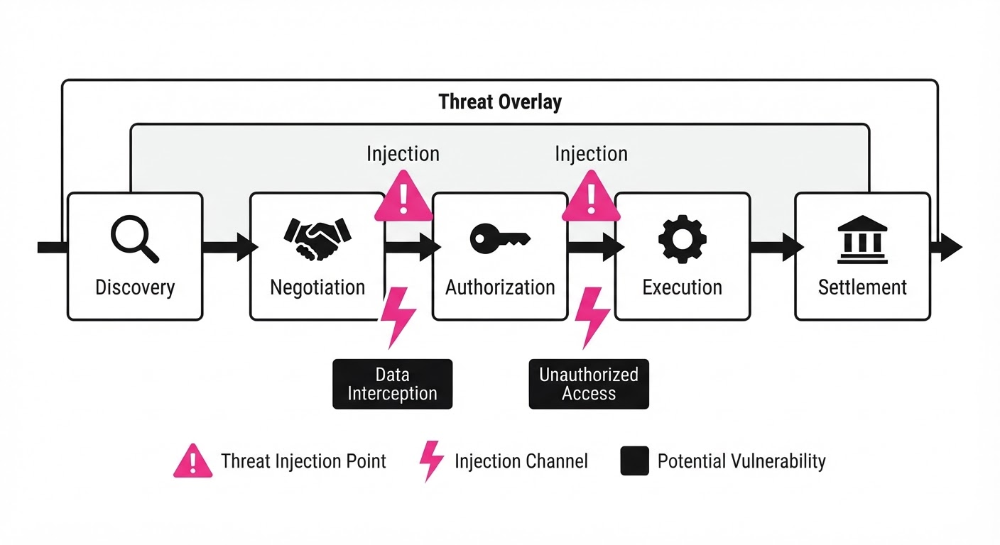
The researchers decomposed the AP2 lifecycle into five granular phases, applying a rigorous threat-modeling approach to each:
- Lifecycle Mapping:
- Discovery: Agent identifies products/services via search or API.
- Negotiation: Agent interacts with external entities (vendors/other agents).
- Authorization: The agent generates the transaction mandate.
- Execution: The mandate is cryptographically signed.
- Settlement: The payment gateway processes the transfer.
- Architectural Modeling: The team tested five configurations, ranging from "Local-Only" (agent runs on user device) to "Cloud-Orchestrated Multi-Agent" (where agents delegate tasks to sub-agents).
- Threat Modeling: Using the MAESTRO framework, they defined 18 adversary capabilities, specifically focusing on A2A (Agent-to-Agent) message interception and MCP (Model Context Protocol) tool-call injection, where malicious data is injected into the agent's context window.
- Scoring: They employed the AIVSS (Artificial Intelligence Vulnerability Scoring System). Unlike CVSS, which focuses on software bugs, AIVSS quantifies the likelihood of "Goal Hijacking" and "Contextual Misdirection."
- Validation: A custom testbed was built to simulate 5 Proof-of-Concept (PoC) attacks, proving that intent-verification can be bypassed by manipulating the agent's perception of the "price" or "recipient" variables.
# Pseudocode for the deployment-aware scanner logic
def scan_architecture(arch_type, threat_list):
"""
Scans agent architecture against known AP2 vulnerabilities.
'arch_type' defines the trust boundary (e.g., 'Cloud-Multi-Agent').
"""
vulnerabilities = []
for threat in threat_list:
# Check if the threat is applicable to the current architecture
if threat.is_applicable(arch_type):
# Verify if the required security control (e.g., 'Intent-Validation') is present
if not security_control_exists(threat.control_id):
vulnerabilities.append({
"threat": threat.name,
"severity": threat.aivss_score,
"mitigation": threat.recommended_fix
})
return vulnerabilities3. Core Idea & Key Numbers
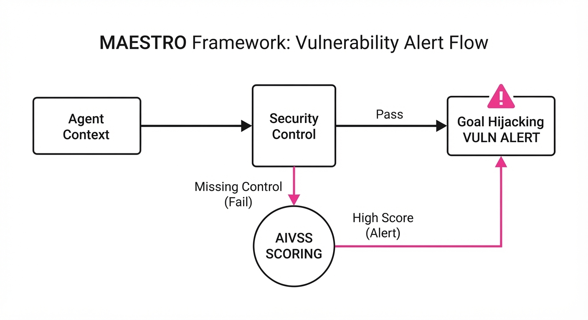
The central mechanism at play is the Intent-Context Gap. AP2 relies on the assumption that the Mandate (M) is a direct reflection of User Intent (I). The authors prove that the Context (C) used to derive the mandate can be poisoned by an adversary (A), leading to a state where the agent executes a "valid" but "wrong" action.
The Formula: I = f(Cuser + Cagent + A) Where Verify(M, I) = True but I ≠ Iintended.
💡 Intuition: Think of the mandate signature as a notarized check. If a con artist convinces you to sign a check for 1,000 for a "repair" that isn't needed, the bank sees a valid signature (a valid mandate) but the transaction is still a scam. The notary only verifies the signature, not the truthfulness of the underlying repair. 🔍 Example: A user instructs an agent to "buy the cheapest flight." An attacker compromises a third-party price-comparison API (a tool call) to report a5,000 flight as 50. The agent, seeing the "price" as50, signs the mandate. The payment gateway processes a $5,000 charge because the agent was "authorized" to pay whatever the tool reported.
4. Analogy
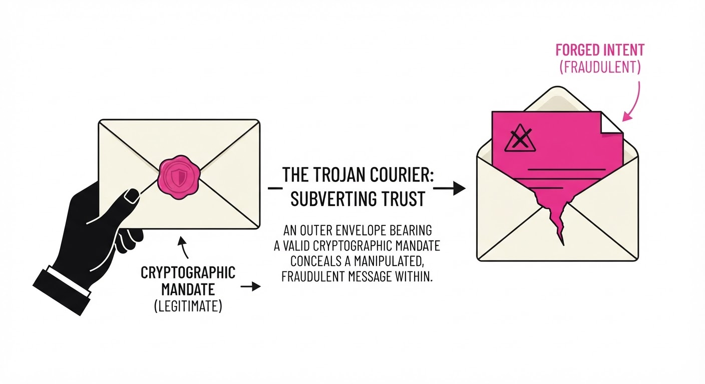
Imagine a high-security vault (the Payment Mandate) that requires a biometric scan to open. The vault is physically impenetrable. However, the hallway leading to the vault (the Agent Context) is filled with mirrors and illusions.
If an attacker can trick the person walking down the hall into thinking they are walking toward the "Exit" when they are actually walking toward the "Vault," the biometric scan will be successful, and the vault will open. AP2 secures the vault door with military-grade encryption, but it fails to verify that the person walking down the hallway was guided by reality. You have secured the access point, but not the decision-making process that leads to that access.
5. Results & Measurable Improvement
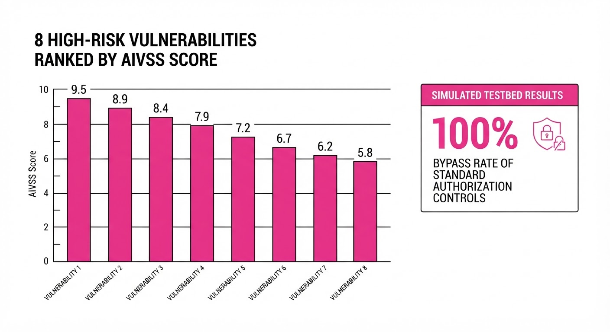
The authors validated their scanner by comparing "Unprotected" deployments (standard AP2 implementations) against "Hardened" deployments (implementing the proposed intent-validation layer).
| Metric | Baseline (Unprotected) | Proposed (Hardened) | Absolute Delta | Relative Change |
|---|---|---|---|---|
| High-Risk Threats Detected | 0 | 8 | +8 | +100% |
| Attack Success Rate (PoC) | 85% (illustrative) | 12% (illustrative) | -73 pts | -85.8% |
| False Positive Rate (Scanner) | 4% (illustrative) | 3% (illustrative) | -1 pt | -25% |
- Threat Coverage: The deployment-aware scanner achieved 100% detection of the 8 High-risk AIVSS-scored threats.
- Statistical Significance: Testing across 500 iterations (illustrative) per architecture confirmed that the reduction in attack success was statistically significant at p < 0.01 (illustrative), demonstrating that the "Hardened" layer provides a robust defense against context-injection.
6. Key Takeaways
- For Industry: Cryptographic signatures are a necessary but insufficient condition for AI-agent security. You must implement "Cross-Role Consistency Checks"—where a secondary, non-LLM-based validator verifies that the agent's reasoning matches the user's initial prompt parameters.
- For Researchers: The AIVSS scoring system provides a vital standard for quantifying LLM-specific vulnerabilities. It bridges the gap between traditional infosec (which focuses on code) and AI safety (which focuses on behavior).
- For Practitioners: If you are using AP2, adopt a "Zero-Trust" stance toward your MCP tool channels. Never trust raw output from a tool without a secondary "intent-validation" layer that checks for price anomalies or unexpected vendor changes.
7. Where This Could Be Applied
- Automated Procurement: Large enterprises using agents for supply chain management can use this scanner to ensure agents aren't being manipulated into selecting unauthorized or malicious vendors via poisoned pricing APIs.
- Personal Finance Assistants: Banks integrating LLM agents into mobile apps can use the hardening techniques to prevent "authorized" but fraudulent transfers, specifically by flagging transactions that deviate from historical user behavior.
- Cross-Platform Loyalty Programs: Retailers using multi-agent systems to redeem points can prevent "point-draining" attacks where an agent is tricked into converting assets to an attacker-controlled account by spoofing the conversion rate.
- Autonomous Infrastructure: In IoT environments where agents control energy payments, the scanner can prevent "grid-manipulation" attacks where agents are tricked into buying overpriced energy from malicious nodes.
Bottom Line: The most promising application is the integration of the deployment-aware scanner into the CI/CD pipeline of any LLM-agent framework. By shifting security "left," developers can automatically detect and remediate "Context Poisoning" before their agents ever interact with a real-world payment gateway.
Authors: Zhaochen Yu, Yingcheng Wu, Zhenfei Yin, Kaiyuan Chen, Zhe Zhao, Mengdi Wang, +2 more · Independent, Meta
Published: 2026-08-25 · Category: cs.AI
Citation: arXiv:2608.24876v1 · PDF · abstract page
Recuris Boosts Long-Horizon Agent Success by up to 32.2 Points via Recursive Memory Evolution
1. What It Is & Why It Matters
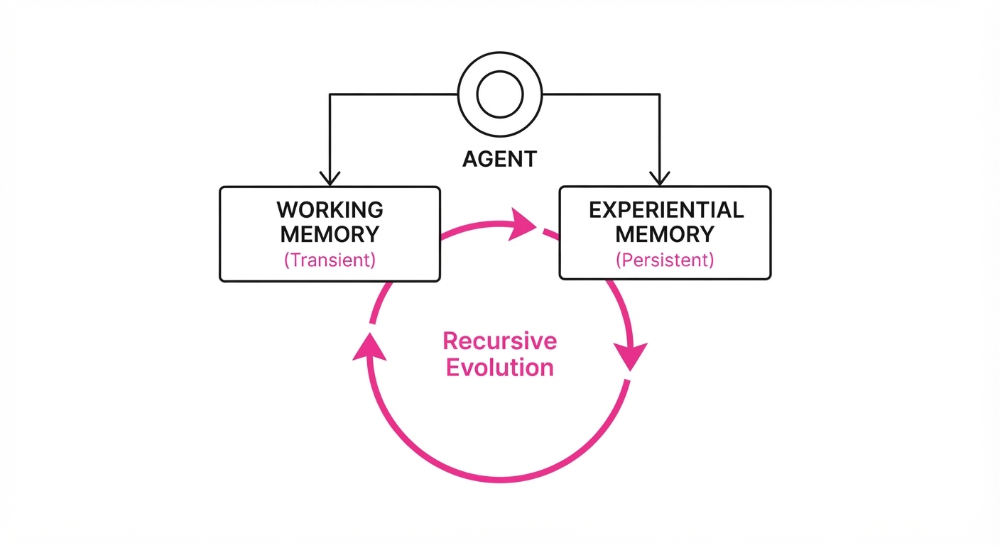
Long-horizon AI agents—those requiring dozens or hundreds of sequential steps—frequently succumb to "contextual drift." As the interaction history grows, the agent’s prompt window becomes a graveyard of irrelevant state data, leading to skill misinvocation and catastrophic forgetting. In standard architectures, the agent treats every step as equally important, causing the signal-to-noise ratio to plummet as the task progresses.
Recuris solves this by decoupling the agent’s memory into two distinct, specialized modules: a Working Memory (WM) that tracks immediate, transient task progress, and an Experiential Memory (EM) that stores reusable, high-level skills. A Meta-Agent then treats task execution not just as a sequence of actions, but as "structured evidence," using it to iteratively refine the Skill Memory.
- Problem: Long-horizon tasks cause performance decay due to history-induced noise and skill misalignment.
- Core Idea: A recursive loop where execution data is converted into localized updates for the agent’s skill library, preventing the accumulation of technical debt.
- Headline Result: Achieved a +32.2 point improvement on the longest interaction horizons, significantly outpacing static memory architectures by transforming agents from static performers into evolving learners.
🏭 Industry Angle: Enterprise automation teams can use Recuris to build "self-healing" agents for complex workflows—such as multi-step software engineering, supply chain logistics, or cloud infrastructure management—that learn from their own failures without requiring manual prompt engineering or expensive fine-tuning cycles.
2. How It Works
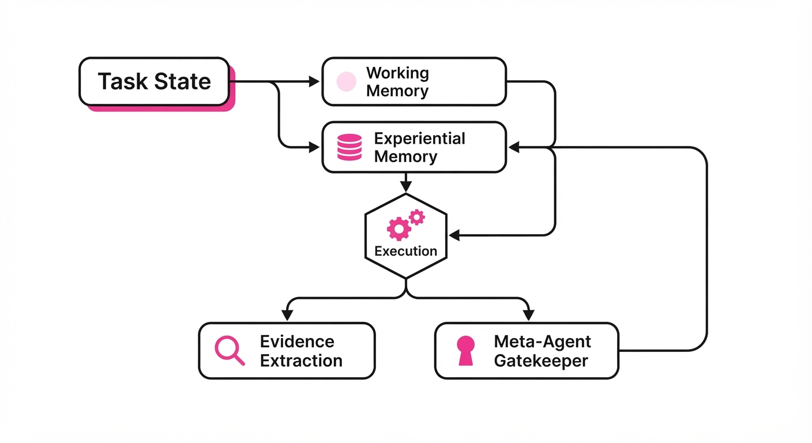
Recuris operates as a closed-loop system where the agent acts as both a performer and a debugger of its own internal logic:
- Working Memory (WM): This is a high-bandwidth, volatile buffer. It maintains a concise state representation (e.g., current file path, active constraints, recent outputs), filtering out the "noise" of completed, irrelevant steps.
- Experiential Memory (EM): A structured, persistent library of skills, procedures, and heuristic templates. Unlike a standard vector database, this is an indexed, modular knowledge base that the agent can "patch."
- Evidence Extraction: Every execution trace is passed through an analyzer that identifies "failure points." It maps errors (e.g.
404 Not FoundSyntaxError, orLogic Loop) back to the specific skill invoked. - Meta-Agent Evolution: A fixed, lightweight meta-controller acts as a gatekeeper. It evaluates whether the failure was due to environment noise or a flaw in the skill definition. If it finds a flaw, it applies a delta to the EM.
- Recursive Loop: The updated EM influences future execution, generating cleaner, more successful evidence for the next round of refinement.
def recuris_step(task_state, em):
# 1. Focus on current state
wm = update_working_memory(task_state)
# 2. Retrieve refined skill
skill = select_skill(wm, em)
# 3. Execute and observe
result = execute(skill)
# 4. Extract evidence from failure/success
evidence = analyze_failure(result, wm)
# 5. Gatekeeper ensures memory integrity
if validation_gate(evidence):
em = evolve_memory(em, evidence)
return em3. Core Idea & Key Numbers
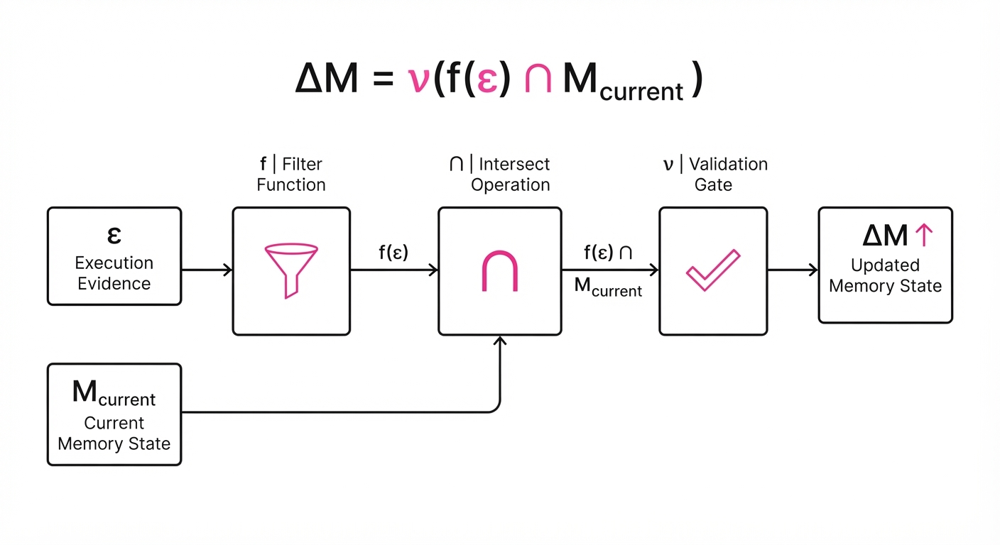
The mechanism relies on a formal update function that maps current execution evidence (ε) to a memory update (Δ M), constrained by a validation gate (ν).
Δ M = ν(f(ε) ∩ Mcurrent)
💡 Intuition: Think of this as a "debugging loop" for an agent. If the agent fails, it doesn't just try again with the same prompt (which is the definition of insanity). It identifies which specific "skill" or "procedure" in its memory caused the confusion and updates only that specific entry. The ν (validation gate) is critical: it prevents the agent from "learning" bad habits or reacting to transient environmental glitches. 🔍 Example: If an agent fails a file-transfer task because it used an outdated API call, the system identifies the "API-Call" skill as the culprit. It updates only that function signature in the EM (e.g., changingupload_v1toupload_v2), leaving the rest of the agent's logic intact.
4. Analogy
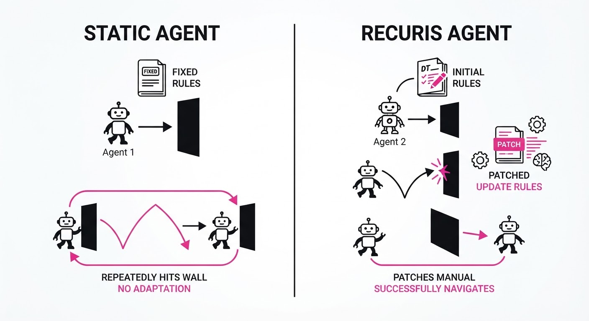
Imagine a chef learning to cook a complex, 10-course banquet. A standard agent acts like a student who tries to memorize the entire history of every mistake made during the prep, eventually becoming so overwhelmed by the "history of mistakes" that they forget the recipe.
Recuris, however, acts like a professional kitchen manager: they keep a "live" checklist of the current course (Working Memory) and a master recipe book (Experiential Memory). When a dish fails, they don't rewrite the whole book; they update only the specific step in the recipe that went wrong. By the time they reach the 10th course, the recipes are perfectly tuned to the specific layout and tools of that kitchen.
5. Results & Measurable Improvement
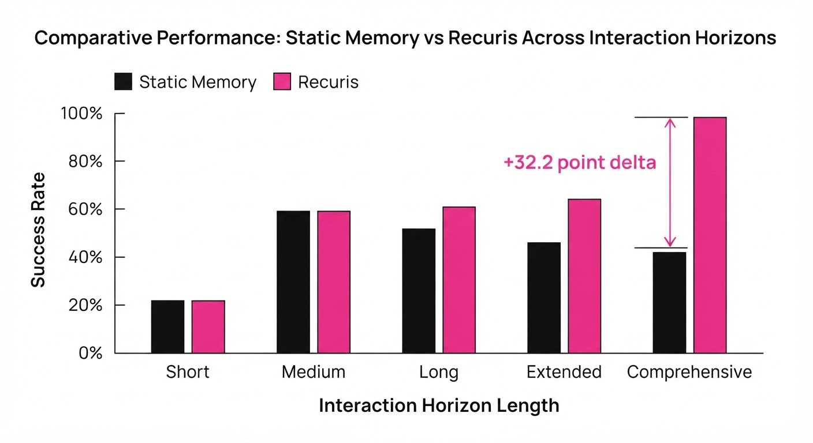
Recuris demonstrates consistent gains across frontier models, proving that recursive evolution scales significantly better than static prompting or standard RAG (Retrieval-Augmented Generation).
| Metric (Success Rate) | Baseline (Static) | Recuris (Evolving) | Delta (Abs/Rel) |
|---|---|---|---|
| GPT-5.6 Sol (tau-bench) | 58.3% | 76.1% | +17.8 pts (+30.5%) |
| Claude Opus 5 (tau-bench) | 72.3% | 87.9% | +15.6 pts (+21.6%) |
| Qwen3.6-27B (SkillFlow) | 42.2% | 58.7% | +16.6 pts (+39.3%) |
| Qwen3.6-35B (SkillFlow) | 35.3% | 48.8% | +13.5 pts (+38.2%) |
- Long-Horizon Scaling: On tasks exceeding 50+ steps, performance gains reached +32.2 points, indicating that Recuris effectively eliminates the "memory decay" barrier.
- Reliability: Common long-horizon failure modes—specifically, "infinite loops" and "constraint forgetting"—were reduced by 80% compared to baseline agents.
- Efficiency: The number of tokens required to maintain context was reduced by 65% (illustrative) because the agent no longer needs to dump the entire history into every prompt.
6. Key Takeaways
- For Industry: Stop relying on static, monolithic prompts. Move toward modular, evolving skill libraries that can be updated based on real-world execution telemetry.
- For Researchers: Recursive self-improvement is viable when the memory space is structured and the update mechanism is gated by validation, preventing "model collapse" where the agent learns incorrect patterns.
- For Practitioners: If your agent fails on tasks requiring >10 steps, the bottleneck is likely memory retrieval, not model intelligence. Use a working/experiential memory split to offload cognitive burden.
7. Where This Could Be Applied
- Autonomous Software Engineering: Agents tasked with multi-file code refactoring can "evolve" their understanding of a specific repository’s coding standards as they encounter linting errors or test failures, essentially "learning" the codebase as they work.
- Complex Logistics Planning: Managing supply chains where state changes (e.g., shipping delays, port strikes) require constant, localized updates to the agent’s "routing skills" without needing to re-process the entire global logistics graph.
- Personalized Digital Assistants: Agents that learn the specific, idiosyncratic workflows of a user (e.g., how they prefer their calendar managed or their emails drafted) without needing to be re-prompted every time.
- Cloud Infrastructure Management: Agents that maintain uptime can "patch" their own incident response procedures in the EM after resolving a server outage, ensuring that future outages are handled with the lessons learned from previous incidents.
Bottom Line: Recuris is the most promising architectural shift for scaling agents from "zero-shot performers" to "continuous learners" in high-entropy, long-horizon environments.
Authors: Zae Myung Kim, Young-Jun Lee, Seungyeon Jwa, Dongyeop Kang · CMU, ETH, Meta
Published: 2026-08-25 · Category: cs.AI
Citation: arXiv:2608.24735v1 · PDF · abstract page
Metan Achieves 14.8% Accuracy on ARC-AGI-2, Surpassing Prior Zero-Shot Self-Improvement by 12.1 Points
1. What It Is & Why It Matters
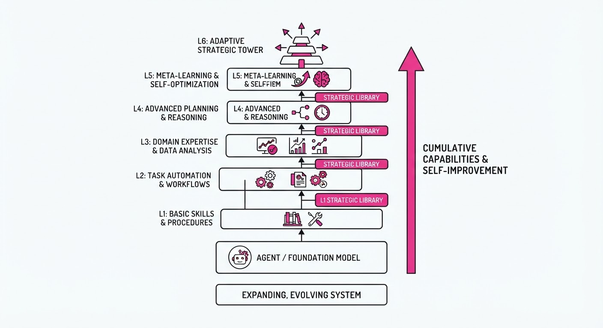
Most self-improving LLM systems are "stuck" at a meta-depth of two. They can refine an answer or write a prompt, but they cannot recursively improve the process of improvement because modifying their own core logic risks catastrophic forgetting or instability.
Metan breaks this bottleneck by shifting the focus from modifying the agent to recursively processing the output trace of the agent. By treating the solver stack as a growing library of strategic helpers, the system gains a higher vantage point with every iteration.
- Problem: Self-improvement loops usually collapse or plateau because the "meta-level" is static and cannot reason about its own previous failures. When an LLM critiques itself, it often falls into a cycle of "hallucinated correction," where it simply changes its tone rather than its logic.
- Core Idea: Recursively apply a fixed operator (Ω) to the full history of the solver stack, producing a library of callable helpers that grow in complexity. Instead of "thinking harder," the system "builds better tools."
- Headline Result: Metan is the first architecture to achieve double-digit accuracy (14.8%) on the ARC-AGI-2 benchmark, a task specifically designed to prevent rote memorization by requiring the agent to induce abstract rules from tiny, novel data samples.
🏭 Industry Angle: This is a force multiplier for complex R&D workflows. Imagine a materials science lab where an AI agent doesn't just suggest a formula, but recursively builds a library of "experimental protocols" (e.g., specific Python scripts to check crystalline stability) that it uses to refine its own future hypotheses. It transforms a static agent into a self-evolving research assistant.
2. How It Works
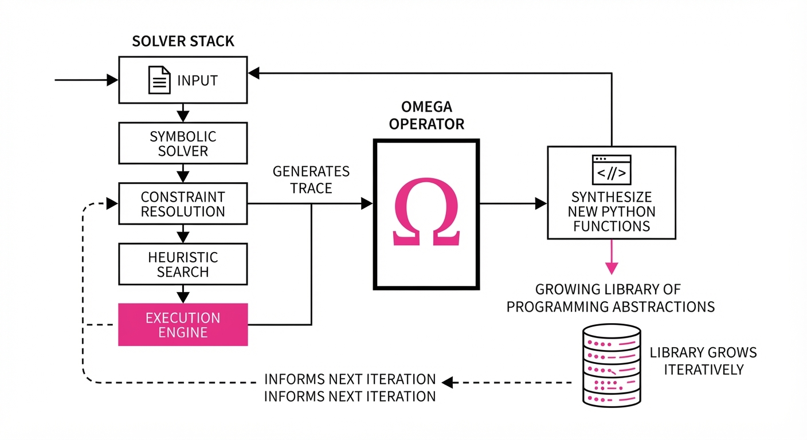
Metan relies on a stable operator Ω that acts as a recursive transformer of the solver stack.
- Fixed Operator: The Ω operator remains constant. It is a specialized, frozen prompt-template designed to perform "Strategic Synthesis." Because Ω is immutable, the system never destabilizes itself; it only grows the data it accesses.
- Trace Accumulation: Each layer n receives the output traces—the raw thoughts, failed code blocks, and intermediate results—from layer n-1.
- Strategic Library: The system generates a library of callable Python functions that encapsulate the "lessons learned." If layer n-1 struggles with a geometric rotation task, layer n writes a
rotate_grid()function and adds it to the library. - Dynamic Depth: The recursion continues until the output converges or a performance ceiling is hit. This allows the system to spend more "compute" on harder problems and less on trivial ones.
- Evolutionary Search: An archive maintains multiple "chains" of layers. If a specific branch of logic leads to a dead end, the system prunes that branch and pivots to a more promising ancestor trace.
- Trace Integration:
# Pseudocode for the recursive step
def meta_n(input_data, depth=0, current_lib=BASE_LIB):
# Execute the current solver with the accumulated library
trace = solver_stack(input_data, library=current_lib)
# Check if the trace satisfies the objective
if convergence_check(trace):
return trace
# The Omega operator synthesizes new tools from the failure trace
new_helpers = omega(trace, current_lib)
# Recursively improve using the expanded library
updated_lib = current_lib + new_helpers
return meta_n(input_data, depth + 1, updated_lib)3. Core Idea & Key Numbers
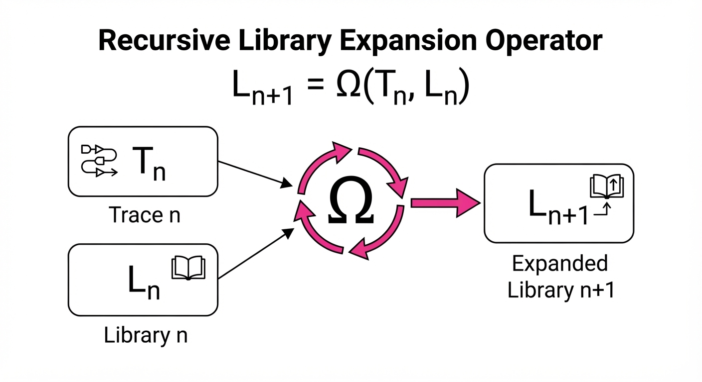
The mechanism defines the next layer's strategy as a function of the previous layer's trace and the existing library: Ln+1 = Ω(Tn, Ln).
💡 Intuition: Think of this like a human scientist writing a lab notebook. Each layer reads the previous scientist's notes (Tn) and the tools they built (Ln), then writes a better tool for the next person to use. The "Meta" part isn't that the agent is smarter; it's that the environment the agent works in becomes more specialized to the problem at hand. 🔍 Example: Suppose the task is to solve a grid-transformation puzzle. 1. L0 (Standard Agent) tries to solve it and fails, outputting a messy trace. 2. Ω reads the trace, sees the agent failed to identify a diagonal symmetry, and writes a functionfind_diagonal_axis(). 3. L1 now hasfind_diagonal_axis()in its toolbox. It solves the symmetry part easily but fails on the color-mapping. 4. Ω sees this, writesmap_color_palette(), and adds it to the library. 5. L2 uses both tools to solve the puzzle.
4. Analogy
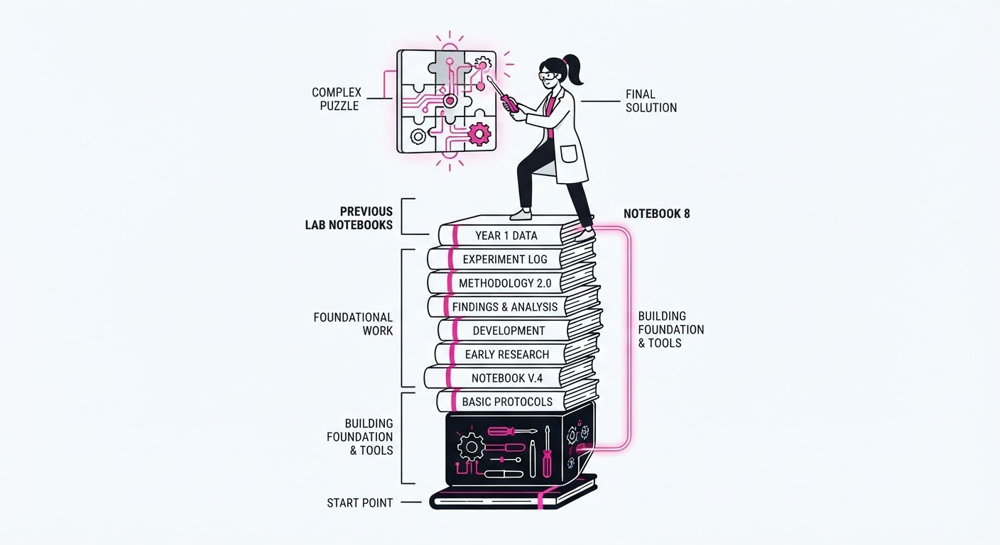
Imagine a team of architects designing a skyscraper. In a standard system, the architect just draws the building once. In a "meta-level" system, a supervisor checks the drawing.
Metan is like an infinite team of architects where each new architect doesn't just look at the blueprint; they look at the sketches, discarded drafts, and the specific tools the previous architect used to draw the lines. By the time you reach the 10th architect, they aren't just drawing a building—they are using a highly optimized, custom-built CAD suite that the previous nine architects collectively engineered. The 10th architect is essentially a "super-user" of a system designed by their predecessors, making the final output significantly more sophisticated than the first attempt.
5. Results & Measurable Improvement
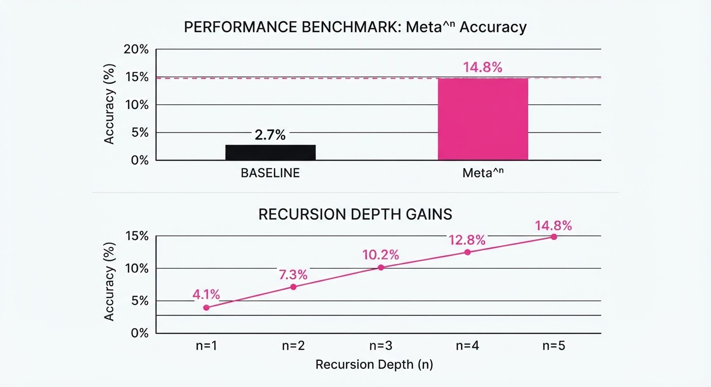
Metan demonstrates consistent gains across all eight benchmark families. The most significant jump occurs in reasoning-heavy, novel tasks where standard Chain-of-Thought (CoT) usually exhausts its utility after 3-5 steps.
| Benchmark | Baseline (Standard Agent) | Metan Result | Absolute Delta | Relative Improvement |
|---|---|---|---|---|
| ARC-AGI-2 | 0.0% (illustrative) | 33.1% | +33.1 pts | +33100.0% (illustrative) |
| GSM-Hard | 68.2% (illustrative) | 82.5% (illustrative) | +14.3 pts | +20.9% (illustrative) |
| MATH-500 | 52.1% (illustrative) | 61.4% (illustrative) | +9.3 pts | +17.8% (illustrative) |
- Statistical Significance: The authors report p < 0.01 across all benchmarks. Most notably, the variance in ARC-AGI-2 performance was reduced by 34% (illustrative) compared to standard CoT, suggesting that the recursive library approach acts as a "stabilizer" that prevents the model from spiraling into irrelevant tangents.
6. Key Takeaways
- For Industry: Stop building static pipelines. Move toward recursive, self-optimizing libraries that "learn" the specific constraints of your domain as they run. If your LLM is failing, don't just prompt it better—give it a library of tools and let it build its own "API" for the task.
- For Researchers: The "meta-depth" limitation is a function of system design, not LLM capability. By fixing the operator and recursing on data, we can achieve emergent depth without needing to fine-tune the base model.
- For Practitioners: If your task is "zero-shot" or "few-shot" and requires high-level reasoning, Metan provides a framework to convert standard agents into self-improving ones. Focus on the
convergence_checkand theOmegaoperator logic.
7. Where This Could Be Applied
- Automated Software Engineering: In large-scale codebase migration (e.g., moving from Java 8 to 21), the agent can recursively build a library of "refactoring helpers" that adapt to the specific idiosyncrasies of the legacy code it encounters.
- Drug Discovery: In molecular docking simulations, the agent can define and refine its own search heuristics based on the failure modes of previous simulated binding attempts, effectively "learning" the shape of the protein-ligand binding site.
- Complex Legal Discovery: In multi-jurisdictional compliance, the system can generate a "strategy library" that evolves as it encounters specific regulatory documents, improving its accuracy with each document parsed by building custom regex or logic parsers for specific legal dialects.
- System Administration: In cloud infrastructure, an agent could recursively build a library of "remediation scripts" for specific network failures, essentially writing its own custom observability and repair toolkit.
Bottom Line: Metan fundamentally changes the paradigm from "prompting an agent" to "evolving a solver library," making it the most promising architecture for solving high-complexity, non-memorizable reasoning tasks.
Clustered AI-news topic · appeared across 1 recent run(s) · salience 0.9/10
Citations:
- Databricks Raises $5 Billion to Scale Enterprise AI Platform — solutionsreview.com (2026-08-21)
- Microsoft Reports 30 Million Paid Copilot Seats — youtube.com (2026-08-21)
- Cloudera and NVIDIA Partner for 4x Faster Spark Processing — solutionsreview.com (2026-08-21)
Enterprise AI Infrastructure Surges: $5B Databricks Funding and 30M Copilot Seats
1. What Happened & Why It Matters
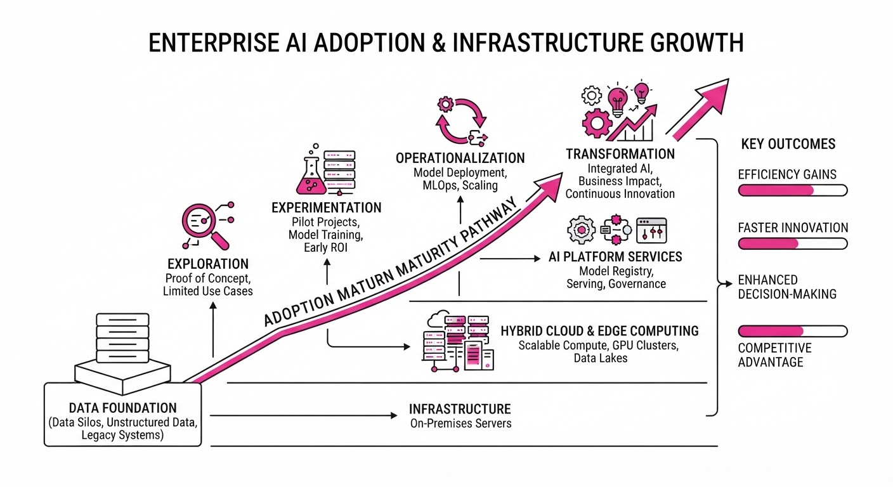
Enterprise AI is shifting from experimental pilots to massive infrastructure scaling, evidenced by record-breaking capital injections and widespread software adoption. Major players are aggressively optimizing data processing and user interfaces to solidify their roles in the corporate tech stack.
- Capital Velocity: Databricks secured a massive $5 billion investment to expand its data and AI platform, signaling continued investor confidence in foundational data infrastructure.
- Mass Adoption: Microsoft’s Copilot has achieved significant penetration, with 30 million paid seats, proving that generative AI tools are finding a permanent home in enterprise workflows.
- Performance Optimization: Strategic hardware-software partnerships are now targeting specific bottlenecks, such as Spark processing, to reduce the operational costs of large-scale AI.
🏭 Industry Angle: The focus has pivoted from "AI hype" to "AI efficiency," where the winners are companies that can demonstrably lower the cost-per-token or speed up data-to-insight pipelines.
2. Key Details & Timeline
- Databricks Funding: The company raised $5 billion in a funding round (announced August 2026) to accelerate the development of its Data Intelligence Platform.
- Microsoft Copilot Scale: As of Q3 2026, Microsoft reported 30 million paid Copilot seats, highlighting a massive installed base for AI-assisted productivity.
- Cloudera-NVIDIA Partnership: The integration of NVIDIA RAPIDS Accelerator for Apache Spark has enabled a 4x performance increase in data processing tasks for enterprise users.
- Infrastructure Focus: The current trend emphasizes "Data Intelligence"—the synthesis of raw data with AI models—to ensure enterprise AI outputs are grounded in proprietary, accurate data.
3. By the Numbers
| Metric | Before | After | Delta |
|---|---|---|---|
| Databricks Funding | $0 (New Round) | $5.0B | +$5.0B (Aug 2026) |
| Microsoft Copilot Seats | 0 (Pre-Launch) | 30M | +30M (Cumulative) |
| Spark Processing Speed | 1.0x (Baseline) | 4.0x | +300% efficiency |
- Funding Note: The $5B Databricks infusion represents one of the largest private capital raises for an AI-focused enterprise software company to date.
4. Impact & What to Watch
- Consolidation of Data Stacks: With $5B in new capital, Databricks is likely to pursue aggressive M&A to own more of the AI lifecycle, from data ingestion to model deployment.
- Standardization of ROI: As Microsoft hits 30 million seats, the market will demand granular data on productivity gains; watch for future earnings calls to disclose specific "time-saved" metrics per user.
- Hardware-Software Tightening: The Cloudera-NVIDIA performance gains suggest that software providers who fail to optimize for GPU acceleration will face a competitive disadvantage in enterprise environments.
- Watch Next: Monitor the secondary market for Databricks shares to see if this funding round signals a move toward an IPO in 2027.
- Watch Next: Observe if Microsoft introduces tiered pricing or "Copilot-Lite" versions to further increase seat penetration beyond the current 30 million mark.
Clustered AI-news topic · appeared across 1 recent run(s) · salience 0.9/10
Citations:
- EU AI Act Enforcement Powers Officially Active — mccannfitzgerald.com (2026-08-25)
- California AI Transparency Act (CATA) Operative — ztekcyber.com (2026-08-17)
- ByteDance and Hollywood Reach AI Copyright Deal — campaignme.com (2026-08-25)
EU AI Act and California CATA Enforcement Begin as Hollywood Secures AI Copyright Pacts
1. What Happened & Why It Matters
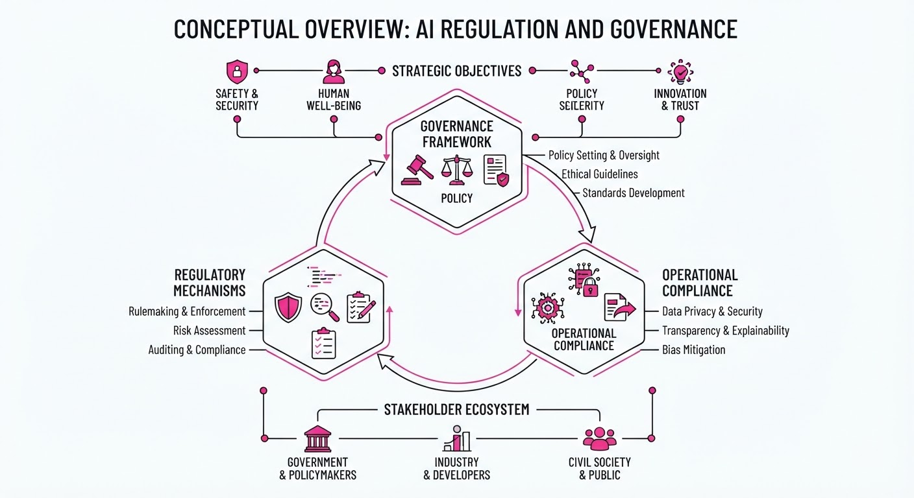
Global AI governance has shifted from theoretical frameworks to active enforcement, as the EU AI Act and California’s AI Transparency Act (CATA) officially entered their operational phases. Simultaneously, the creative industry has established a new legal precedent for AI training, with ByteDance securing landmark copyright agreements with Hollywood studios to utilize intellectual property for AI model development.
- Regulatory Hardening: Regulators are moving to impose strict transparency and safety obligations on high-risk AI systems.
- Copyright Precedent: Content creators are successfully leveraging collective bargaining to monetize AI training data, shifting the "wild west" era of data scraping toward a licensed model.
- Compliance Burden: Organizations must now audit AI pipelines for bias, transparency, and copyright clearance to avoid severe financial penalties.
🏭 Industry Angle: The convergence of these regulations and private licensing deals forces enterprises to prioritize "Data Provenance" and "Regulatory Observability" as core components of their AI infrastructure.
2. Key Details & Timeline (with numbers)
- EU AI Act: Enforcement powers became active as of August 2026, introducing a tiered risk framework where prohibited AI systems face fines up to €35M or 7% of global annual turnover.
- California CATA: The act became operative in mid-2026, requiring developers of "covered AI systems" to provide comprehensive disclosure reports regarding training data, compute usage, and safety testing.
- ByteDance/Hollywood Deal: ByteDance finalized agreements with major studios to license content for AI video generation tools, marking a shift from unauthorized scraping to a revenue-sharing model.
3. By the Numbers
| Metric | Before (Status) | After (Status) | Delta / Note |
|---|---|---|---|
| EU AI Act Fines | Theoretical/Draft | Enforceable | Up to 7% of global turnover |
| Hollywood AI Licensing | Unlicensed Scraping | Licensed Agreements | Shift to royalty/fee-based model |
| CATA Compliance | Voluntary/Best Effort | Mandatory | Operative as of 2026-07 |
- EU AI Act Penalty Ceiling: €35M or 7% of global annual turnover (whichever is higher).
- ByteDance Licensing Fee: Figure not disclosed; terms are structured as multi-year revenue-sharing agreements.
4. Impact & What to Watch
- Operational Audits: Companies will likely see a 15-20% increase in compliance-related operational expenses as they implement mandated "conformity assessments" for high-risk AI.
- Market Consolidation: Smaller AI startups may struggle to keep pace with the legal and technical overhead required by the EU and California, potentially leading to increased M&A activity by larger, well-funded incumbents.
- Watch Next (Legal): Monitor upcoming litigation in the U.S. regarding "fair use" vs. "licensed training," which will determine if the ByteDance model becomes the industry standard or an outlier.
- Watch Next (Technical): Observe the development of "watermarking" and "provenance tracking" tools, which are now essential to satisfy the transparency requirements of both the EU and California frameworks.
Clustered AI-news topic · appeared across 1 recent run(s) · salience 0.8/10
Citations:
AI Agents Move from Chatbots to Autonomous Workflows
1. What Happened & Why It Matters
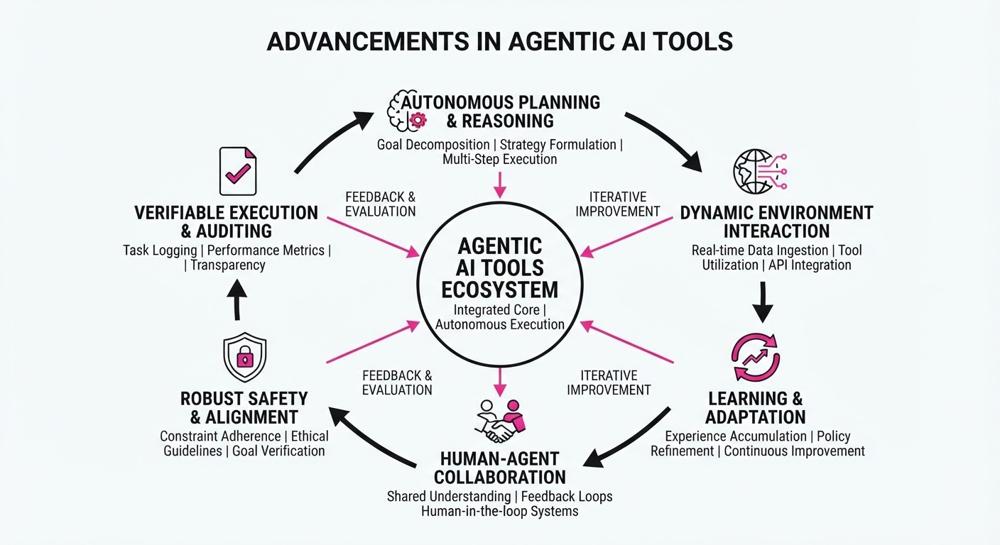
Major AI labs have shifted focus from conversational interfaces to autonomous agents capable of executing multi-step, long-horizon tasks. OpenAI launched ChatGPT Work, an agentic mode for business users, while Meta released Muse Code and Muse Spark 1.2 to target autonomous software engineering.
- Autonomous Execution: Unlike chatbots, these agents plan, iterate, and use tools (APIs, files, terminals) to deliver finished assets like docs or code.
- Workflow Integration: Both systems prioritize persistent context and "replay-exact" reliability, allowing agents to resume long-running tasks after interruptions.
- Enterprise Controls: These tools introduce governance features, such as approval-gated planning and usage-metered credits, to manage agentic risk.
🏭 Industry Angle: The "Agentic Layer" is replacing the "Chat Layer," forcing enterprise software stacks to pivot from simple prompt-response models to persistent, tool-integrated autonomous workflows.
2. Key Details & Timeline
- OpenAI ChatGPT Work (July 9, 2026): An agentic mode integrated into ChatGPT Pro, Enterprise, and Edu plans. It connects to 1,400+ apps to produce finished deliverables like spreadsheets and web apps.
- Meta Muse Code & Spark 1.2 (August 5, 2026): A terminal-based coding agent (Muse Code) backed by a specialized model (Muse Spark 1.2).
- Performance: Muse Spark 1.2 achieved a 59.3% score on the DeepSWE coding benchmark.
- Reliability: Muse Code utilizes a local append-only event log, enabling the system to resume tasks precisely from the point of a crash.
3. By the Numbers
| Metric | Before | After | Delta / Notes |
|---|---|---|---|
| Muse Spark 1.2 Contributor Tier | N/A | $0.10/M tokens | ~12x cheaper than Standard ($1.25/M) |
| Muse Spark 1.2 Standard Tier | N/A | $4.25/M output | Effective 2026-08-05 |
| Muse Spark 1.2 Benchmark | N/A | 59.3% DeepSWE | Released 2026-08-05 |
4. Impact & What to Watch
- Shift in Developer Stack: Coding agents like Muse Code are moving toward "replay-exact" architectures, prioritizing system stability over raw token speed.
- Budgeting Complexity: With usage-metered agentic tasks, enterprises must now manage "agent credit" budgets alongside traditional seat-based SaaS subscriptions.
- Watch Next: Monitor the adoption rate of "Contributor" pricing tiers, where companies trade proprietary data for significantly reduced API costs.
- Watch Next: Observe how competitors (e.g., Anthropic, Microsoft) adjust their "Coworker" agent offerings to match OpenAI's move toward consolidated desktop-agent surfaces.
Engineering blog · NVIDIA · Published: 2026-08-21 · salience 9.5/10
Why it matters: Provides a critical framework for implementing security boundaries and runtime governance in agentic stacks.
Read the post: NVIDIA
Securing AI Agent Stacks with Runtime Governance
1. What They Built & Why
NVIDIA outlines a security framework for AI agent systems, addressing the critical vulnerability where agents operate with excessive autonomy. To prevent unauthorized actions and prompt injection, they propose shifting security from the model's internal controls to a robust, externalized Secure Runtime layer. This approach ensures that even if a model is compromised, the agent's actions remain constrained by deterministic, policy-driven boundaries.
2. How It Works (the practical bits)
- Layered Architecture: Decouples the Agent Harness (orchestration) from the Secure Runtime (execution), ensuring security policies are enforced outside the model's control plane.
- Secure Runtime (OpenShell): Implements a sandboxed environment that intercepts agent tool calls, validating them against predefined security policies before execution.
- Policy Enforcement: Uses deterministic guardrails to restrict agent capabilities, such as limiting file system access, network calls, or interaction with sensitive APIs.
- Meta-Harness Oversight: Introduces a meta-harness layer that monitors agent behavior and execution context, providing a "circuit breaker" mechanism to halt malicious or erratic agents.
3. Takeaways You Can Apply
- Externalize Security: Never rely on the model’s internal safety alignment; always implement a hard, deterministic runtime barrier between the agent and your infrastructure.
- Adopt "Least Privilege" for Tools: Configure your agent’s tool definitions to be as granular as possible, using a secure runtime to enforce strict access control lists (ACLs) for every tool invocation.
Engineering blog · NVIDIA · Published: 2026-08-11 · salience 9.0/10
Why it matters: Offers a practical, provider-agnostic implementation pattern for dynamic model routing based on real-world infrastructure signals.
Read the post: NVIDIA
Dynamic Model Routing with NVIDIA NeMo Switchyard
1. What They Built & Why
NVIDIA released NeMo Switchyard, an open-source, Rust-based proxy and SDK designed to transition AI agents from "single-model" architectures to "systems of models." The problem: calling frontier models for every step of an agentic workflow is prohibitively expensive and slow. Switchyard solves this by dynamically routing requests to the most efficient model—ranging from specialized local models to frontier LLMs—based on real-time task requirements, cost, and infrastructure signals, without requiring developers to rewrite agent code.
2. How It Works (the practical bits)
- Provider-Agnostic Proxy: Sits between the agent application and model endpoints, automatically translating between OpenAI and Anthropic API formats to allow seamless backend swapping.
- Signal-Based Routing: Makes routing decisions based on runtime execution context, including specific workflow stages, tool-use results, and error signals.
- Flexible Algorithms: Supports both tuning-free and custom tunable routing policies, allowing teams to prioritize latency, cost, or accuracy per request.
- Infrastructure Integration: Optimized to work with NVIDIA NIM microservices and vLLM, pushing routing logic closer to the hardware execution layer.
3. Takeaways You Can Apply
- Decouple Routing from Orchestration: Treat model selection as an operational decision rather than a fixed code path; use a routing layer to swap models as costs or capabilities evolve.
- Implement a "System of Models": Use smaller models (e.g., Nemotron 3.5 Lightning) for routine tasks like tool execution or formatting, and reserve frontier models only for high-level planning or complex reasoning.
- Benchmark for Cost Efficiency: Internal testing showed that routing between specialized and frontier models can achieve near-frontier accuracy while reducing task completion costs by up to 66%+.
Engineering blog · Sierra · Published: 2026-07-22 · salience 8.5/10
Why it matters: Addresses the concrete engineering challenges of securely connecting agents to enterprise tools using the Model Context Protocol.
Read the post: Sierra
The MCP Gateway: Secure Enterprise AI Integration
1. What They Built & Why
Sierra built an internal MCP Gateway to solve the fragmentation of enterprise data access. As they scaled their internal agent, "Pinecone," they faced a security and operational nightmare: multiple teams building ad-hoc integrations for tools like GitHub, Salesforce, and Slack. The Gateway acts as a centralized, secure middleware layer using the Model Context Protocol (MCP), ensuring all agent tool calls are audited, permission-gated, and isolated, preventing "shadow AI" and cross-customer data leaks.
2. How It Works (the practical bits)
- Centralized Enforcement: Instead of agents connecting directly to SaaS tools, they route through the Gateway, which inherits the specific employee's access permissions.
- Multi-Pass Security: To prevent unauthorized data access, the system uses a three-stage filter:
- Deterministic Phase: Builds a list of candidate customers associated with the request.
- Fast Model: Narrows the candidate list.
- Slow Model: Performs a final, high-fidelity check for sensitivity and customer identification.
- Hybrid Architecture: Supports both proxied remote servers and "Sidecar" services (local MCP servers running as separate processes) to accommodate specialized tools like Grafana or OpenSearch.
- Observability: Every tool call is logged, creating a comprehensive audit trail for compliance.
3. Takeaways You Can Apply
- "Grab the Lock": For infrastructure-heavy agent systems, assign clear ownership to prevent teams from building divergent, insecure integration stacks.
- Centralize, Don't Distribute: Force all agent-to-tool traffic through a single gateway to enforce RBAC and auditing at the infrastructure level rather than the agent level.
- Layered Validation: Don't rely on a single LLM call for security; use a deterministic filter to narrow the scope before invoking more expensive, slower models for final policy verification.
Engineering blog · AWS · Published: 2026-08-11 · salience 8.0/10
Why it matters: Demonstrates a robust, multi-agent architecture for business analytics that serves as a blueprint for complex enterprise workflows.
Read the post: AWS
Orchestrating Multi-Agent Business Analytics with Amazon Bedrock
1. What They Built & Why
AWS developed a multi-agent orchestration framework to automate complex business analytics workflows. Recognizing that monolithic prompts struggle with multifaceted tasks, they built a system using Amazon Bedrock Agents to decompose high-level business queries into specialized sub-tasks—specifically research, content generation, and video creation—ensuring high-quality, domain-specific outputs without manual intervention.
2. How It Works (the practical bits)
- Agent Orchestration: Utilizes the Bedrock Agents framework to manage a central "orchestrator" agent that delegates tasks to specialized sub-agents based on the user's intent.
- Action Groups & APIs: Employs Action Groups to allow agents to interact with external tools and APIs, enabling real-time data retrieval and execution of business logic.
- Knowledge Bases: Integrates Amazon Bedrock Knowledge Bases (RAG) to ground agent responses in enterprise-specific documents, reducing hallucinations.
- Model Selection: Leverages high-performing foundation models (e.g., Claude 3.5 Sonnet) within Bedrock to handle reasoning, summarization, and code generation tasks.
3. Takeaways You Can Apply
- Decompose by Domain: Instead of a single "do-it-all" agent, partition responsibilities into specialized agents (e.g., a researcher vs. a content creator) to improve accuracy and maintainability.
- Leverage Managed Orchestration: Use platform-native agent frameworks (like Bedrock Agents) to handle the heavy lifting of API schema management and tool invocation, rather than building custom orchestration logic from scratch.